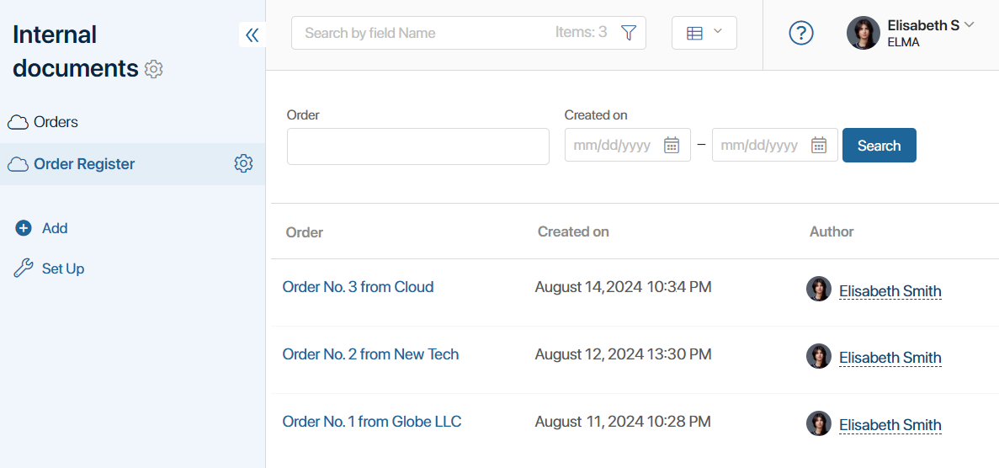

A report is a monitor tool that gathers data from multiple system components and displays it in the form of a table.
The components added to a report are called data sources. These can be any app or business process of the system. During report configuration, fields that will be displayed as table columns are selected from these sources.
To gather data from several components added to the report in one table, the sources are linked together in pairs. This is done by using properties from their context. When setting up the binding, you can define which items or instances of sources will be displayed in the table.
For example, there are two apps in the system: Orders and Invoices. Their items are not linked, i.e., the order does not display the invoice issued to the client. However, an order and an invoice have a common field Contract. You can create an Order Register report, add these two apps as sources, and merge their data. The source items in the report will be linked by a common contract. The table for each order will show the sum of all invoices issued for it.

In this way, data from multiple apps can be sorted, viewed, and filtered in a single interface.
Report features
Let’s consider the main features of the Report:
- A report is created in a workspace and functions like a regular app. You can configure the report visibility for specific user groups in the workspace left menu.
- You can use any apps and business processes of the system as report sources.
- Report sources are linked to each other in pairs using properties from their context. It is possible to configure binding between sources by types: app—app, business process—app, business process—business process.
- When connecting sources, one or multiple data filtering conditions can be established. For example, you can choose to display all information from the sources or exclude items with empty values in the common field.
- The report table is created when you add sources. Columns of the table are selected properties of the source. You can edit the order of the columns. Properties with the search and sort option enabled are added to the report as search filters.
- When configuring a report, you can view the appearance of the table with data in debug mode.
- Data from the report can be retrieved by creating API requests and can be accessed in scripts using TS SDK methods.
- Data from the report can be exported to an .xlsx file using custom table export templates.
- You can create a new report by copying an existing component. You can also delete a report from the left menu and restore it from the trash.
- To visualize data from the report, you can create charts or tables based on it and place them on another page of the system or on an app form.
- You can navigate to the report page from the app form or another page. For this purpose, a field of the Report type is used, where the specified report is displayed as a link.
Read more about reports in the following articles:
- Create and configure a report
- Add sources and set up the report table
- Bind report source apps
- Export report data
- Report customization example
- Work with report table
Found a typo? Select it and press Ctrl+Enter to send us feedback